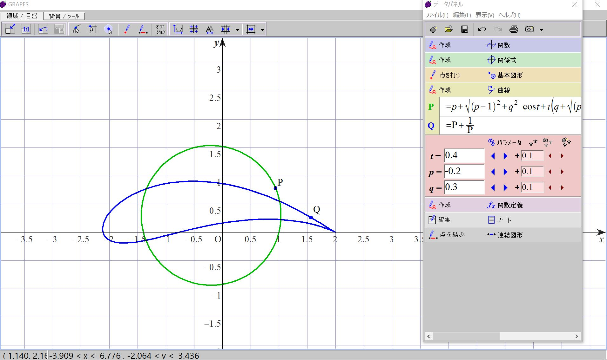

ジュコフスキー変換をやってみる(作成中)
・ジュコフスキー変換がやりたい
ジュコフスキー変換がやりたいだけ。
つまり、複素数平面の複素数zの集合で出来る図形から、
ω=z+a/z(あるいは=z+a1/z+a2/z^2+...)
となるような複素数ωの集合による図形を作る。
例えば、中心(-0.2,0.3)の点(1,0)を通る円をジュコフスキー変換すると(ω=z+1/z) 
情報最終電送日:2024/03/09